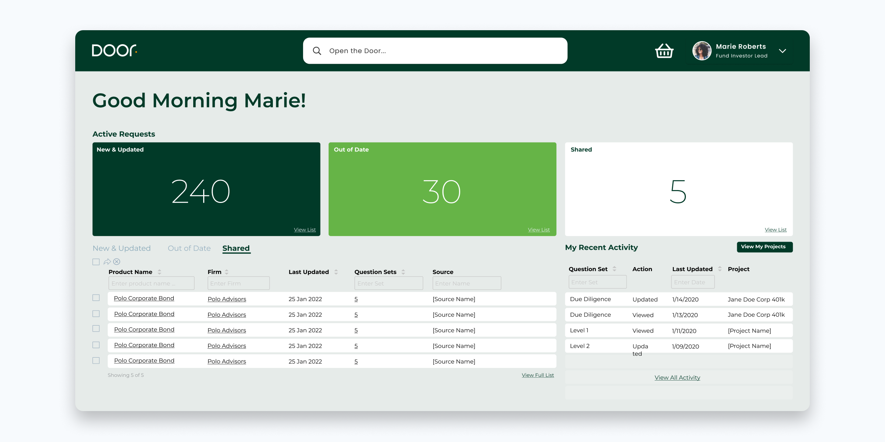
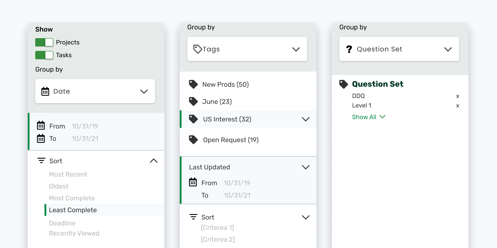
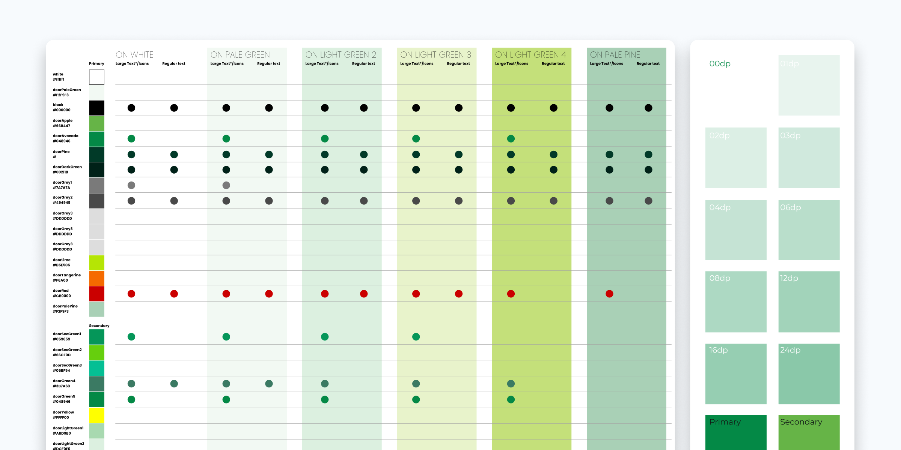

Door
Investment firms managing due diligence at scale are buried in repetitive questionnaires, fragmented communications, and manual approval processes that slow fundraising to a crawl. Door was built to change that — and needed a user experience to match its ambition.
Key Contributions
- User flows
- Stakeholder collaboration
- Accessibility Optimization
Results
75%
faster approval time
$3.5B
assets under management
Updated User Dashboard
Onboarding a new platform is only as fast as the moment users feel oriented. I designed a personalized dashboard that surfaces each user's most critical data on sign-in, with direct entry points into the 4 most common workflows and a recent activity feed — so users spend less time finding their place and more time moving deals forward.

Advanced Search
Due diligence lives and dies by the ability to find the right document at the right time. Previously, users had to search column by column to narrow results — a process that reflected how the system was built, not how users actually think. I redesigned search around their natural behavior, and combined it with a new bulk approval feature that resulted in a 75% increase in approval times.

Accessibility Enhancements
Reaching Go-Live with Fortune 500 clients meant meeting their compliance standards, not just design ones. When the new design system introduced color and component choices that fell outside 508 compliance, I audited the full palette and component library, adjusting colors and providing accessible alternatives to ensure the product could be deployed without exception.

Conclusion
From first login to final approval, I redesigned the end-to-end experience to take Door from MVP to Go-Live with 2 Fortune 500 financial institutions — faster workflows, full compliance, and a product users actually wanted to use.